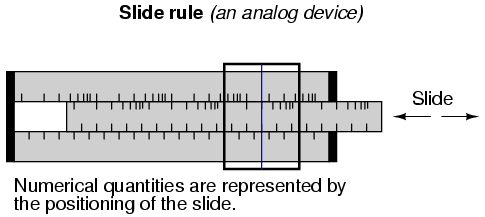

"There are three types of people: those who can count, and those who can't."
Anonymous
The expression of numerical quantities is something we tend to take for granted. This is both a good and a bad thing in the study of electronics. It is good, in that we're accustomed to the use and manipulation of numbers for the many calculations used in analyzing electronic circuits. On the other hand, the particular system of notation we've been taught from grade school onward is not the system used internally in modern electronic computing devices, and learning any different system of notation requires some re-examination of deeply ingrained assumptions.
First, we have to distinguish the difference between numbers and the symbols we use to represent numbers. A number is a mathematical quantity, usually correlated in electronics to a physical quantity such as voltage, current, or resistance. There are many different types of numbers. Here are just a few types, for example:
WHOLE NUMBERS: 1, 2, 3, 4, 5, 6, 7, 8, 9 . . .
INTEGERS: -4, -3, -2, -1, 0, 1, 2, 3, 4 . . .
IRRATIONAL NUMBERS: π (approx. 3.1415927), e (approx. 2.718281828), square root of any prime
REAL NUMBERS: (All one-dimensional numerical values, negative and positive, including zero, whole, integer, and irrational numbers)
COMPLEX NUMBERS: 3 - j4 , 34.5 ∠ 20o
Different types of numbers find different application in the physical world. Whole numbers work well for counting discrete objects, such as the number of resistors in a circuit. Integers are needed when negative equivalents of whole numbers are required. Irrational numbers are numbers that cannot be exactly expressed as the ratio of two integers, and the ratio of a perfect circle's circumference to its diameter (π) is a good physical example of this. The non-integer quantities of voltage, current, and resistance that we're used to dealing with in DC circuits can be expressed as real numbers, in either fractional or decimal form. For AC circuit analysis, however, real numbers fail to capture the dual essence of magnitude and phase angle, and so we turn to the use of complex numbers in either rectangular or polar form.
If we are to use numbers to understand processes in the physical world, make scientific predictions, or balance our checkbooks, we must have a way of symbolically denoting them. In other words, we may know how much money we have in our checking account, but to keep record of it we need to have some system worked out to symbolize that quantity on paper, or in some other kind of form for record-keeping and tracking. There are two basic ways we can do this: analog and digital. With analog representation, the quantity is symbolized in a way that is infinitely divisible. With digital representation, the quantity is symbolized in a way that is discretely packaged.
You're probably already familiar with an analog representation of money, and didn't realize it for what it was. Have you ever seen a fund-raising poster made with a picture of a thermometer on it, where the height of the red column indicated the amount of money collected for the cause? The more money collected, the taller the column of red ink on the poster.

This is an example of an analog representation of a number. There is no real limit to how finely divided the height of that column can be made to symbolize the amount of money in the account. Changing the height of that column is something that can be done without changing the essential nature of what it is. Length is a physical quantity that can be divided as small as you would like, with no practical limit. The slide rule is a mechanical device that uses the very same physical quantity -- length -- to represent numbers, and to help perform arithmetical operations with two or more numbers at a time. It, too, is an analog device.
On the other hand, a digital representation of that same monetary figure, written with standard symbols (sometimes called ciphers), looks like this:
$35,955.38
Unlike the "thermometer" poster with its red column, those symbolic characters above cannot be finely divided: that particular combination of ciphers stand for one quantity and one quantity only. If more money is added to the account (+ $40.12), different symbols must be used to represent the new balance ($35,995.50), or at least the same symbols arranged in different patterns. This is an example of digital representation. The counterpart to the slide rule (analog) is also a digital device: the abacus, with beads that are moved back and forth on rods to symbolize numerical quantities:

Let's contrast these two methods of numerical representation:
ANALOG DIGITAL ------------------------------------------------------------------ Intuitively understood ----------- Requires training to interpret Infinitely divisible -------------- Discrete Prone to errors of precision ------ Absolute precision
Interpretation of numerical symbols is something we tend to take for granted, because it has been taught to us for many years. However, if you were to try to communicate a quantity of something to a person ignorant of decimal numerals, that person could still understand the simple thermometer chart!
The infinitely divisible vs. discrete and precision comparisons are really flip-sides of the same coin. The fact that digital representation is composed of individual, discrete symbols (decimal digits and abacus beads) necessarily means that it will be able to symbolize quantities in precise steps. On the other hand, an analog representation (such as a slide rule's length) is not composed of individual steps, but rather a continuous range of motion. The ability for a slide rule to characterize a numerical quantity to infinite resolution is a trade-off for imprecision. If a slide rule is bumped, an error will be introduced into the representation of the number that was "entered" into it. However, an abacus must be bumped much harder before its beads are completely dislodged from their places (sufficient to represent a different number).
Please don't misunderstand this difference in precision by thinking that digital representation is necessarily more accurate than analog. Just because a clock is digital doesn't mean that it will always read time more accurately than an analog clock, it just means that the interpretation of its display is less ambiguous.
Divisibility of analog versus digital representation can be further illuminated by talking about the representation of irrational numbers. Numbers such as π are called irrational, because they cannot be exactly expressed as the fraction of integers, or whole numbers. Although you might have learned in the past that the fraction 22/7 can be used for π in calculations, this is just an approximation. The actual number "pi" cannot be exactly expressed by any finite, or limited, number of decimal places. The digits of π go on forever:
3.1415926535897932384 . . . . .
It is possible, at least theoretically, to set a slide rule (or even a thermometer column) so as to perfectly represent the number π, because analog symbols have no minimum limit to the degree that they can be increased or decreased. If my slide rule shows a figure of 3.141593 instead of 3.141592654, I can bump the slide just a bit more (or less) to get it closer yet. However, with digital representation, such as with an abacus, I would need additional rods (place holders, or digits) to represent π to further degrees of precision. An abacus with 10 rods simply cannot represent any more than 10 digits worth of the number π, no matter how I set the beads. To perfectly represent π, an abacus would have to have an infinite number of beads and rods! The tradeoff, of course, is the practical limitation to adjusting, and reading, analog symbols. Practically speaking, one cannot read a slide rule's scale to the 10th digit of precision, because the marks on the scale are too coarse and human vision is too limited. An abacus, on the other hand, can be set and read with no interpretational errors at all.
Furthermore, analog symbols require some kind of standard by which they can be compared for precise interpretation. Slide rules have markings printed along the length of the slides to translate length into standard quantities. Even the thermometer chart has numerals written along its height to show how much money (in dollars) the red column represents for any given amount of height. Imagine if we all tried to communicate simple numbers to each other by spacing our hands apart varying distances. The number 1 might be signified by holding our hands 1 inch apart, the number 2 with 2 inches, and so on. If someone held their hands 17 inches apart to represent the number 17, would everyone around them be able to immediately and accurately interpret that distance as 17? Probably not. Some would guess short (15 or 16) and some would guess long (18 or 19). Of course, fishermen who brag about their catches don't mind overestimations in quantity!
Perhaps this is why people have generally settled upon digital symbols for representing numbers, especially whole numbers and integers, which find the most application in everyday life. Using the fingers on our hands, we have a ready means of symbolizing integers from 0 to 10. We can make hash marks on paper, wood, or stone to represent the same quantities quite easily:
For large numbers, though, the "hash mark" numeration system is too inefficient.
The Romans devised a system that was a substantial improvement over hash marks, because it used a variety of symbols (or ciphers) to represent increasingly large quantities. The notation for 1 is the capital letter I. The notation for 5 is the capital letter V. Other ciphers possess increasing values:
X = 10 L = 50 C = 100 D = 500 M = 1000
If a cipher is accompanied by another cipher of equal or lesser value to the immediate right of it, with no ciphers greater than that other cipher to the right of that other cipher, that other cipher's value is added to the total quantity. Thus, VIII symbolizes the number 8, and CLVII symbolizes the number 157. On the other hand, if a cipher is accompanied by another cipher of lesser value to the immediate left, that other cipher's value is subtracted from the first. Therefore, IV symbolizes the number 4 (V minus I), and CM symbolizes the number 900 (M minus C). You might have noticed that ending credit sequences for most motion pictures contain a notice for the date of production, in Roman numerals. For the year 1987, it would read: MCMLXXXVII. Let's break this numeral down into its constituent parts, from left to right:
M = 1000 + CM = 900 + L = 50 + XXX = 30 + V = 5 + II = 2
Aren't you glad we don't use this system of numeration? Large numbers are very difficult to denote this way, and the left vs. right / subtraction vs. addition of values can be very confusing, too. Another major problem with this system is that there is no provision for representing the number zero or negative numbers, both very important concepts in mathematics. Roman culture, however, was more pragmatic with respect to mathematics than most, choosing only to develop their numeration system as far as it was necessary for use in daily life.
We owe one of the most important ideas in numeration to the ancient Babylonians, who were the first (as far as we know) to develop the concept of cipher position, or place value, in representing larger numbers. Instead of inventing new ciphers to represent larger numbers, as the Romans did, they re-used the same ciphers, placing them in different positions from right to left. Our own decimal numeration system uses this concept, with only ten ciphers (0, 1, 2, 3, 4, 5, 6, 7, 8, and 9) used in "weighted" positions to represent very large and very small numbers.
Each cipher represents an integer quantity, and each place from right to left in the notation represents a multiplying constant, or weight, for each integer quantity. For example, if we see the decimal notation "1206", we known that this may be broken down into its constituent weight-products as such:
1206 = 1000 + 200 + 6 1206 = (1 x 1000) + (2 x 100) + (0 x 10) + (6 x 1)
Each cipher is called a digit in the decimal numeration system, and each weight, or place value, is ten times that of the one to the immediate right. So, we have a ones place, a tens place, a hundreds place, a thousands place, and so on, working from right to left.
Right about now, you're probably wondering why I'm laboring to describe the obvious. Who needs to be told how decimal numeration works, after you've studied math as advanced as algebra and trigonometry? The reason is to better understand other numeration systems, by first knowing the how's and why's of the one you're already used to.
The decimal numeration system uses ten ciphers, and place-weights that are multiples of ten. What if we made a numeration system with the same strategy of weighted places, except with fewer or more ciphers?
The binary numeration system is such a system. Instead of ten different cipher symbols, with each weight constant being ten times the one before it, we only have two cipher symbols, and each weight constant is twice as much as the one before it. The two allowable cipher symbols for the binary system of numeration are "1" and "0," and these ciphers are arranged right-to-left in doubling values of weight. The rightmost place is the ones place, just as with decimal notation. Proceeding to the left, we have the twos place, the fours place, the eights place, the sixteens place, and so on. For example, the following binary number can be expressed, just like the decimal number 1206, as a sum of each cipher value times its respective weight constant:
11010 = 2 + 8 + 16 = 26 11010 = (1 x 16) + (1 x 8) + (0 x 4) + (1 x 2) + (0 x 1)
This can get quite confusing, as I've written a number with binary numeration (11010), and then shown its place values and total in standard, decimal numeration form (16 + 8 + 2 = 26). In the above example, we're mixing two different kinds of numerical notation. To avoid unnecessary confusion, we have to denote which form of numeration we're using when we write (or type!). Typically, this is done in subscript form, with a "2" for binary and a "10" for decimal, so the binary number 110102 is equal to the decimal number 2610.
The subscripts are not mathematical operation symbols like superscripts (exponents) are. All they do is indicate what system of numeration we're using when we write these symbols for other people to read. If you see "310", all this means is the number three written using decimal numeration. However, if you see "310", this means something completely different: three to the tenth power (59,049). As usual, if no subscript is shown, the cipher(s) are assumed to be representing a decimal number.
Commonly, the number of cipher types (and therefore, the place-value multiplier) used in a numeration system is called that system's base. Binary is referred to as "base two" numeration, and decimal as "base ten." Additionally, we refer to each cipher position in binary as a bit rather than the familiar word digit used in the decimal system.
Now, why would anyone use binary numeration? The decimal system, with its ten ciphers, makes a lot of sense, being that we have ten fingers on which to count between our two hands. (It is interesting that some ancient central American cultures used numeration systems with a base of twenty. Presumably, they used both fingers and toes to count!!). But the primary reason that the binary numeration system is used in modern electronic computers is because of the ease of representing two cipher states (0 and 1) electronically. With relatively simple circuitry, we can perform mathematical operations on binary numbers by representing each bit of the numbers by a circuit which is either on (current) or off (no current). Just like the abacus with each rod representing another decimal digit, we simply add more circuits to give us more bits to symbolize larger numbers. Binary numeration also lends itself well to the storage and retrieval of numerical information: on magnetic tape (spots of iron oxide on the tape either being magnetized for a binary "1" or demagnetized for a binary "0"), optical disks (a laser-burned pit in the aluminum foil representing a binary "1" and an unburned spot representing a binary "0"), or a variety of other media types.
Before we go on to learning exactly how all this is done in digital circuitry, we need to become more familiar with binary and other associated systems of numeration.
Let's count from zero to twenty using four different kinds of numeration systems: hash marks, Roman numerals, decimal, and binary:
System: Hash Marks Roman Decimal Binary ------- ---------- ----- ------- ------ Zero n/a n/a 0 0 One | I 1 1 Two || II 2 10 Three ||| III 3 11 Four |||| IV 4 100 Five /|||/ V 5 101 Six /|||/ | VI 6 110 Seven /|||/ || VII 7 111 Eight /|||/ ||| VIII 8 1000 Nine /|||/ |||| IX 9 1001 Ten /|||/ /|||/ X 10 1010 Eleven /|||/ /|||/ | XI 11 1011 Twelve /|||/ /|||/ || XII 12 1100 Thirteen /|||/ /|||/ ||| XIII 13 1101 Fourteen /|||/ /|||/ |||| XIV 14 1110 Fifteen /|||/ /|||/ /|||/ XV 15 1111 Sixteen /|||/ /|||/ /|||/ | XVI 16 10000 Seventeen /|||/ /|||/ /|||/ || XVII 17 10001 Eighteen /|||/ /|||/ /|||/ ||| XVIII 18 10010 Nineteen /|||/ /|||/ /|||/ |||| XIX 19 10011 Twenty /|||/ /|||/ /|||/ /|||/ XX 20 10100
Neither hash marks nor the Roman system are very practical for symbolizing large numbers. Obviously, place-weighted systems such as decimal and binary are more efficient for the task. Notice, though, how much shorter decimal notation is over binary notation, for the same number of quantities. What takes five bits in binary notation only takes two digits in decimal notation.
This raises an interesting question regarding different numeration systems: how large of a number can be represented with a limited number of cipher positions, or places? With the crude hash-mark system, the number of places IS the largest number that can be represented, since one hash mark "place" is required for every integer step. For place-weighted systems of numeration, however, the answer is found by taking base of the numeration system (10 for decimal, 2 for binary) and raising it to the power of the number of places. For example, 5 digits in a decimal numeration system can represent 100,000 different integer number values, from 0 to 99,999 (10 to the 5th power = 100,000). 8 bits in a binary numeration system can represent 256 different integer number values, from 0 to 11111111 (binary), or 0 to 255 (decimal), because 2 to the 8th power equals 256. With each additional place position to the number field, the capacity for representing numbers increases by a factor of the base (10 for decimal, 2 for binary).
An interesting footnote for this topic is the one of the first electronic digital computers, the Eniac. The designers of the Eniac chose to represent numbers in decimal form, digitally, using a series of circuits called "ring counters" instead of just going with the binary numeration system, in an effort to minimize the number of circuits required to represent and calculate very large numbers. This approach turned out to be counter-productive, and virtually all digital computers since then have been purely binary in design.
To convert a number in binary numeration to its equivalent in decimal form, all you have to do is calculate the sum of all the products of bits with their respective place-weight constants. To illustrate:
Convert 110011012 to decimal form: bits = 1 1 0 0 1 1 0 1 . - - - - - - - - weight = 1 6 3 1 8 4 2 1 (in decimal 2 4 2 6 notation) 8
The bit on the far right side is called the Least Significant Bit (LSB), because it stands in the place of the lowest weight (the one's place). The bit on the far left side is called the Most Significant Bit (MSB), because it stands in the place of the highest weight (the one hundred twenty-eight's place). Remember, a bit value of "1" means that the respective place weight gets added to the total value, and a bit value of "0" means that the respective place weight does not get added to the total value. With the above example, we have:
12810 + 6410 + 810 + 410 + 110 = 20510
If we encounter a binary number with a dot (.), called a "binary point" instead of a decimal point, we follow the same procedure, realizing that each place weight to the right of the point is one-half the value of the one to the left of it (just as each place weight to the right of a decimal point is one-tenth the weight of the one to the left of it). For example:
Convert 101.0112 to decimal form: . bits = 1 0 1 . 0 1 1 . - - - - - - - weight = 4 2 1 1 1 1 (in decimal / / / notation) 2 4 8
410 + 110 + 0.2510 + 0.12510 = 5.37510
Because binary numeration requires so many bits to represent relatively small numbers compared to the economy of the decimal system, analyzing the numerical states inside of digital electronic circuitry can be a tedious task. Computer programmers who design sequences of number codes instructing a computer what to do would have a very difficult task if they were forced to work with nothing but long strings of 1's and 0's, the "native language" of any digital circuit. To make it easier for human engineers, technicians, and programmers to "speak" this language of the digital world, other systems of place-weighted numeration have been made which are very easy to convert to and from binary.
One of those numeration systems is called octal, because it is a place-weighted system with a base of eight. Valid ciphers include the symbols 0, 1, 2, 3, 4, 5, 6, and 7. Each place weight differs from the one next to it by a factor of eight.
Another system is called hexadecimal, because it is a place-weighted system with a base of sixteen. Valid ciphers include the normal decimal symbols 0, 1, 2, 3, 4, 5, 6, 7, 8, and 9, plus six alphabetical characters A, B, C, D, E, and F, to make a total of sixteen. As you might have guessed already, each place weight differs from the one before it by a factor of sixteen.
Let's count again from zero to twenty using decimal, binary, octal, and hexadecimal to contrast these systems of numeration:
Number Decimal Binary Octal Hexadecimal ------ ------- ------- ----- ----------- Zero 0 0 0 0 One 1 1 1 1 Two 2 10 2 2 Three 3 11 3 3 Four 4 100 4 4 Five 5 101 5 5 Six 6 110 6 6 Seven 7 111 7 7 Eight 8 1000 10 8 Nine 9 1001 11 9 Ten 10 1010 12 A Eleven 11 1011 13 B Twelve 12 1100 14 C Thirteen 13 1101 15 D Fourteen 14 1110 16 E Fifteen 15 1111 17 F Sixteen 16 10000 20 10 Seventeen 17 10001 21 11 Eighteen 18 10010 22 12 Nineteen 19 10011 23 13 Twenty 20 10100 24 14
Octal and hexadecimal numeration systems would be pointless if not for their ability to be easily converted to and from binary notation. Their primary purpose in being is to serve as a "shorthand" method of denoting a number represented electronically in binary form. Because the bases of octal (eight) and hexadecimal (sixteen) are even multiples of binary's base (two), binary bits can be grouped together and directly converted to or from their respective octal or hexadecimal digits. With octal, the binary bits are grouped in three's (because 23 = 8), and with hexadecimal, the binary bits are grouped in four's (because 24 = 16):
BINARY TO OCTAL CONVERSION Convert 10110111.12 to octal: . . implied zero implied zeros . | || . 010 110 111 100 Convert each group of bits ### ### ### . ### to its octal equivalent: 2 6 7 4 . Answer: 10110111.12 = 267.48
We had to group the bits in three's, from the binary point left, and from the binary point right, adding (implied) zeros as necessary to make complete 3-bit groups. Each octal digit was translated from the 3-bit binary groups. Binary-to-Hexadecimal conversion is much the same:
BINARY TO HEXADECIMAL CONVERSION Convert 10110111.12 to hexadecimal: . . implied zeros . ||| . 1011 0111 1000 Convert each group of bits ---- ---- . ---- to its hexadecimal equivalent: B 7 8 . Answer: 10110111.12 = B7.816
Here we had to group the bits in four's, from the binary point left, and from the binary point right, adding (implied) zeros as necessary to make complete 4-bit groups:
Likewise, the conversion from either octal or hexadecimal to binary is done by taking each octal or hexadecimal digit and converting it to its equivalent binary (3 or 4 bit) group, then putting all the binary bit groups together.
Incidentally, hexadecimal notation is more popular, because binary bit groupings in digital equipment are commonly multiples of eight (8, 16, 32, 64, and 128 bit), which are also multiples of 4. Octal, being based on binary bit groups of 3, doesn't work out evenly with those common bit group sizings.
Although the prime intent of octal and hexadecimal numeration systems is for the "shorthand" representation of binary numbers in digital electronics, we sometimes have the need to convert from either of those systems to decimal form. Of course, we could simply convert the hexadecimal or octal format to binary, then convert from binary to decimal, since we already know how to do both, but we can also convert directly.
Because octal is a base-eight numeration system, each place-weight value differs from either adjacent place by a factor of eight. For example, the octal number 245.37 can be broken down into place values as such:
octal digits = 2 4 5 . 3 7 . - - - - - - weight = 6 8 1 1 1 (in decimal 4 / / notation) 8 6 . 4
The decimal value of each octal place-weight times its respective cipher multiplier can be determined as follows:
(2 x 6410) + (4 x 810) + (5 x 110) + (3 x 0.12510) + (7 x 0.01562510) = 165.48437510
The technique for converting hexadecimal notation to decimal is the same, except that each successive place-weight changes by a factor of sixteen. Simply denote each digit's weight, multiply each hexadecimal digit value by its respective weight (in decimal form), then add up all the decimal values to get a total. For example, the hexadecimal number 30F.A916 can be converted like this:
hexadecimal digits = 3 0 F . A 9 . - - - - - - weight = 2 1 1 1 1 (in decimal 5 6 / / notation) 6 1 2 . 6 5 . 6
(3 x 25610) + (0 x 1610) + (15 x 110) + (10 x 0.062510) + (9 x 0.0039062510) = 783.6601562510
These basic techniques may be used to convert a numerical notation of any base into decimal form, if you know the value of that numeration system's base.
Because octal and hexadecimal numeration systems have bases that are multiples of binary (base 2), conversion back and forth between either hexadecimal or octal and binary is very easy. Also, because we are so familiar with the decimal system, converting binary, octal, or hexadecimal to decimal form is relatively easy (simply add up the products of cipher values and place-weights). However, conversion from decimal to any of these "strange" numeration systems is a different matter.
The method which will probably make the most sense is the "trial-and-fit" method, where you try to "fit" the binary, octal, or hexadecimal notation to the desired value as represented in decimal form. For example, let's say that I wanted to represent the decimal value of 87 in binary form. Let's start by drawing a binary number field, complete with place-weight values:
. . - - - - - - - - weight = 1 6 3 1 8 4 2 1 (in decimal 2 4 2 6 notation) 8
Well, we know that we won't have a "1" bit in the 128's place, because that would immediately give us a value greater than 87. However, since the next weight to the right (64) is less than 87, we know that we must have a "1" there.
. 1 . - - - - - - - Decimal value so far = 6410 weight = 6 3 1 8 4 2 1 (in decimal 4 2 6 notation)
If we were to make the next place to the right a "1" as well, our total value would be 6410 + 3210, or 9610. This is greater than 8710, so we know that this bit must be a "0". If we make the next (16's) place bit equal to "1," this brings our total value to 6410 + 1610, or 8010, which is closer to our desired value (8710) without exceeding it:
. 1 0 1 . - - - - - - - Decimal value so far = 8010 weight = 6 3 1 8 4 2 1 (in decimal 4 2 6 notation)
By continuing in this progression, setting each lesser-weight bit as we need to come up to our desired total value without exceeding it, we will eventually arrive at the correct figure:
. 1 0 1 0 1 1 1 . - - - - - - - Decimal value so far = 8710 weight = 6 3 1 8 4 2 1 (in decimal 4 2 6 notation)
This trial-and-fit strategy will work with octal and hexadecimal conversions, too. Let's take the same decimal figure, 8710, and convert it to octal numeration:
. . - - - weight = 6 8 1 (in decimal 4 notation)
If we put a cipher of "1" in the 64's place, we would have a total value of 6410 (less than 8710). If we put a cipher of "2" in the 64's place, we would have a total value of 12810 (greater than 8710). This tells us that our octal numeration must start with a "1" in the 64's place:
. 1 . - - - Decimal value so far = 6410 weight = 6 8 1 (in decimal 4 notation)
Now, we need to experiment with cipher values in the 8's place to try and get a total (decimal) value as close to 87 as possible without exceeding it. Trying the first few cipher options, we get:
"1" = 6410 + 810 = 7210 "2" = 6410 + 1610 = 8010 "3" = 6410 + 2410 = 8810
A cipher value of "3" in the 8's place would put us over the desired total of 8710, so "2" it is!
. 1 2 . - - - Decimal value so far = 8010 weight = 6 8 1 (in decimal 4 notation)
Now, all we need to make a total of 87 is a cipher of "7" in the 1's place:
. 1 2 7 . - - - Decimal value so far = 8710 weight = 6 8 1 (in decimal 4 notation)
Of course, if you were paying attention during the last section on octal/binary conversions, you will realize that we can take the binary representation of (decimal) 8710, which we previously determined to be 10101112, and easily convert from that to octal to check our work:
. Implied zeros . || . 001 010 111 Binary . — --- — . 1 2 7 Octal . Answer: 10101112 = 1278
Can we do decimal-to-hexadecimal conversion the same way? Sure, but who would want to? This method is simple to understand, but laborious to carry out. There is another way to do these conversions, which is essentially the same (mathematically), but easier to accomplish.
This other method uses repeated cycles of division (using decimal notation) to break the decimal numeration down into multiples of binary, octal, or hexadecimal place-weight values. In the first cycle of division, we take the original decimal number and divide it by the base of the numeration system that we're converting to (binary=2 octal=8, hex=16). Then, we take the whole-number portion of division result (quotient) and divide it by the base value again, and so on, until we end up with a quotient of less than 1. The binary, octal, or hexadecimal digits are determined by the "remainders" left over by each division step. Let's see how this works for binary, with the decimal example of 8710:
. 87 Divide 87 by 2, to get a quotient of 43.5 . — = 43.5 Division "remainder" = 1, or the < 1 portion . 2 of the quotient times the divisor (0.5 x 2) . . 43 Take the whole-number portion of 43.5 (43) . — = 21.5 and divide it by 2 to get 21.5, or 21 with . 2 a remainder of 1 . . 21 And so on . . . remainder = 1 (0.5 x 2) . — = 10.5 . 2 . . 10 And so on . . . remainder = 0 . — = 5.0 . 2 . . 5 And so on . . . remainder = 1 (0.5 x 2) . — = 2.5 . 2 . . 2 And so on . . . remainder = 0 . — = 1.0 . 2 . . 1 . . . until we get a quotient of less than 1 . — = 0.5 remainder = 1 (0.5 x 2) . 2
The binary bits are assembled from the remainders of the successive division steps, beginning with the LSB and proceeding to the MSB. In this case, we arrive at a binary notation of 10101112. When we divide by 2, we will always get a quotient ending with either ".0" or ".5", i.e. a remainder of either 0 or 1. As was said before, this repeat-division technique for conversion will work for numeration systems other than binary. If we were to perform successive divisions using a different number, such as 8 for conversion to octal, we will necessarily get remainders between 0 and 7. Let's try this with the same decimal number, 8710:
. 87 Divide 87 by 8, to get a quotient of 10.875 . — = 10.875 Division "remainder" = 7, or the < 1 portion . 8 of the quotient times the divisor (.875 x 8) . . 10 . — = 1.25 Remainder = 2 . 8 . . 1 . — = 0.125 Quotient is less than 1, so we'll stop here. . 8 Remainder = 1 . . RESULT: 8710 = 1278
We can use a similar technique for converting numeration systems dealing with quantities less than 1, as well. For converting a decimal number less than 1 into binary, octal, or hexadecimal, we use repeated multiplication, taking the integer portion of the product in each step as the next digit of our converted number. Let's use the decimal number 0.812510 as an example, converting to binary:
. 0.8125 x 2 = 1.625 Integer portion of product = 1 . . 0.625 x 2 = 1.25 Take < 1 portion of product and remultiply . Integer portion of product = 1 . . 0.25 x 2 = 0.5 Integer portion of product = 0 . . 0.5 x 2 = 1.0 Integer portion of product = 1 . Stop when product is a pure integer . (ends with .0) . . RESULT: 0.812510 = 0.11012
As with the repeat-division process for integers, each step gives us the next digit (or bit) further away from the "point." With integer (division), we worked from the LSB to the MSB (right-to-left), but with repeated multiplication, we worked from the left to the right. To convert a decimal number greater than 1, with a < 1 component, we must use both techniques, one at a time. Take the decimal example of 54.4062510, converting to binary:
REPEATED DIVISION FOR THE INTEGER PORTION: . . 54 . — = 27.0 Remainder = 0 . 2 . . 27 . — = 13.5 Remainder = 1 (0.5 x 2) . 2 . . 13 . — = 6.5 Remainder = 1 (0.5 x 2) . 2 . . 6 . — = 3.0 Remainder = 0 . 2 . . 3 . — = 1.5 Remainder = 1 (0.5 x 2) . 2 . . 1 . — = 0.5 Remainder = 1 (0.5 x 2) . 2 . PARTIAL ANSWER: 5410 = 1101102
REPEATED MULTIPLICATION FOR THE < 1 PORTION: . . 0.40625 x 2 = 0.8125 Integer portion of product = 0 . . 0.8125 x 2 = 1.625 Integer portion of product = 1 . . 0.625 x 2 = 1.25 Integer portion of product = 1 . . 0.25 x 2 = 0.5 Integer portion of product = 0 . . 0.5 x 2 = 1.0 Integer portion of product = 1 . . PARTIAL ANSWER: 0.4062510 = 0.011012 . . COMPLETE ANSWER: 5410 + 0.4062510 = 54.4062510 . . 1101102 + 0.011012 = 110110.011012
Lessons In Electric Circuits copyright (C) 2000-2023 Tony R. Kuphaldt, under the terms and conditions of the CC BY License.